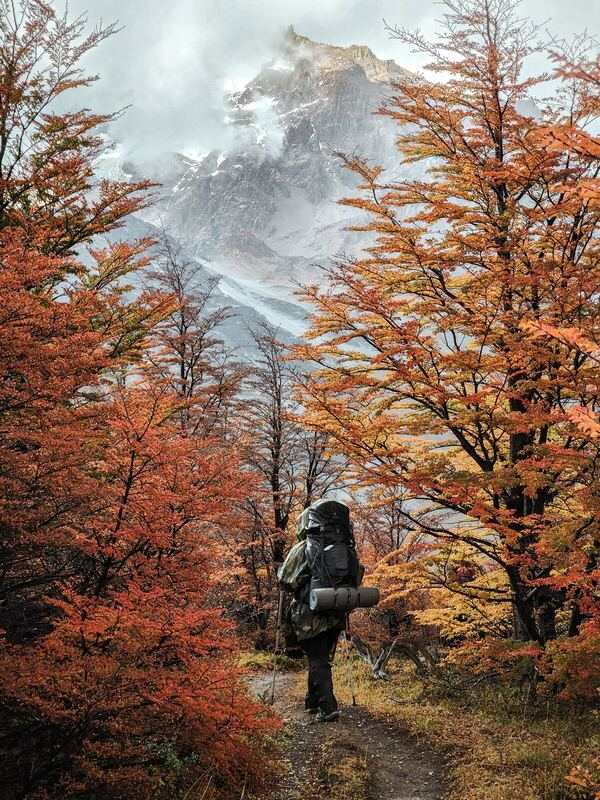

What we do
Full Time
Those who work full time are site maintainors, moderators, and guides. We offer pay between $25 and $35 depending of role and experience.
Part Time
If you dont want to fully commit but still want to work for us you can act as a surveyor. These are individuals who check out locations of interest and report to us any updates, changes, and help ensure the routes are safe.

Volunteer work
We will accept any help that can be provided. Given that we are a non profit organization many of our workers are volunteers. If you are capable of helping make sure routes are secure, guide others, or other talents that you believe would be benefit's to us then please let us know.
How to contact us?
If you are interested in any of our positions or have any questions, please contact us at Fakeemail.mail. We should get back to you within 1 to 3 business days